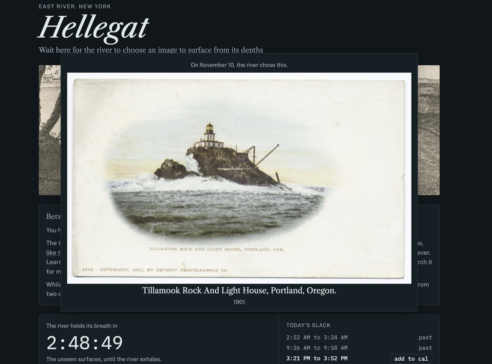
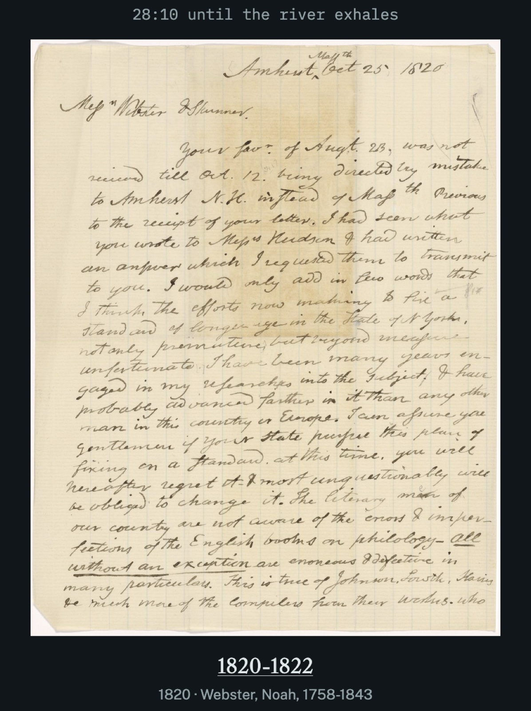
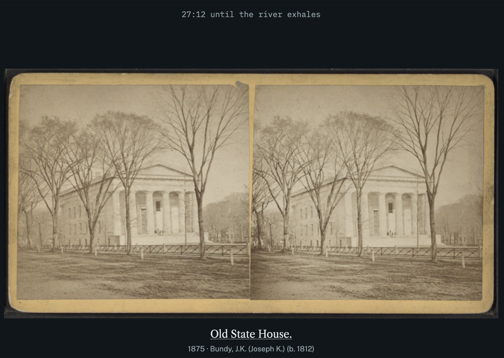
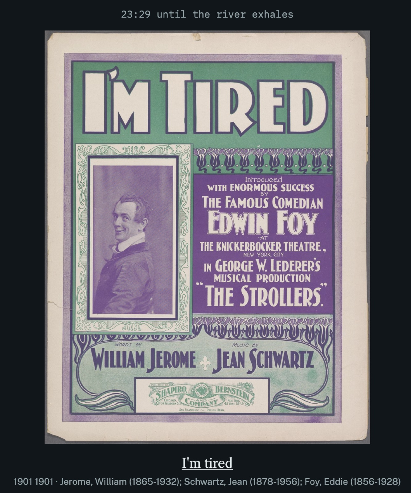
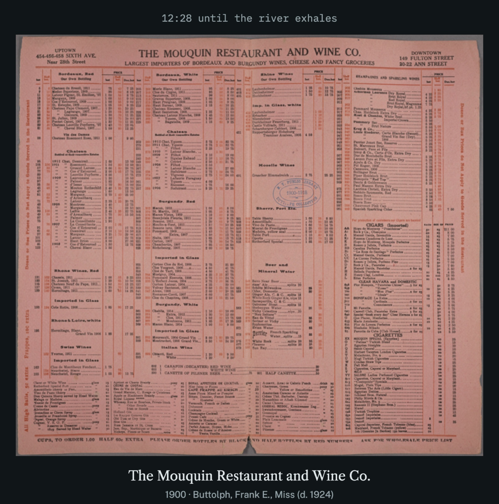

East River, New York
Hellegat
Press
What it is
Hellegat, a digital art project by Maria Saha, watches Hell Gate, the treacherous strait in New York's East River where two tides meet. It uses live tide readings to pick one image out of more than 400,000 in the New York Public Library's digital collections, and shows it only during slack water, the brief stillness when the current turns. Then the image sinks back. The river makes the choice, so no one knows what will surface.
How it works
Hellegat uses live and predicted tide readings from the National Oceanic and Atmospheric Administration (NOAA), taken at both ends of the East River, to pick and surface an image from the New York Public Library's collection during what is known as "slack water."
Images
Images the river has surfaced, as they appeared on the site. Click any image to open the full-size file.










Images from the New York Public Library's public domain collection, as surfaced by the river.
About the artist
Maria Saha is an artist and lifelong New Yorker who has lived steps from the East River for over 20 years. She works in pen and ink, woodworking, book making, and code. She holds an MFA from the Yale School of Art and a BFA in Painting & Printmaking from the School of Visual Arts, and has worked as a psychotherapist, a backend developer, and a user researcher. Her work is drawn to lovely, constant things revealed only by chance.